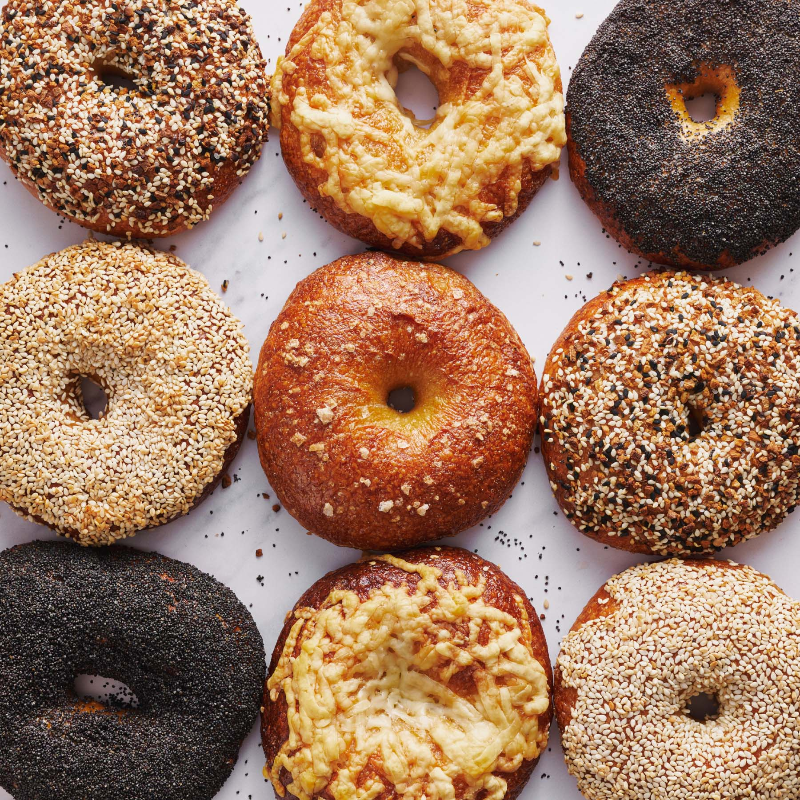

Bagel
 Although bagels look reminiscent of donuts, they are a completely different thing!
Before they are baked, bagels are boiled in water, resulting in a dense, doughy interior with a browned, crisp exterior.
They are often topped with seeds and can be eaten with savory or sweet filings.
A tasty choice! But be careful; they can be quite calorie dense! (I personally don't care though..)